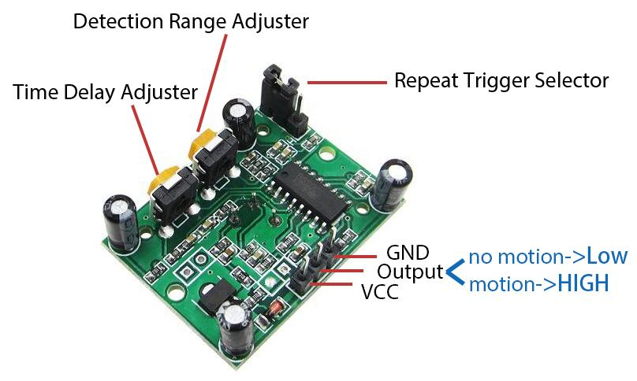
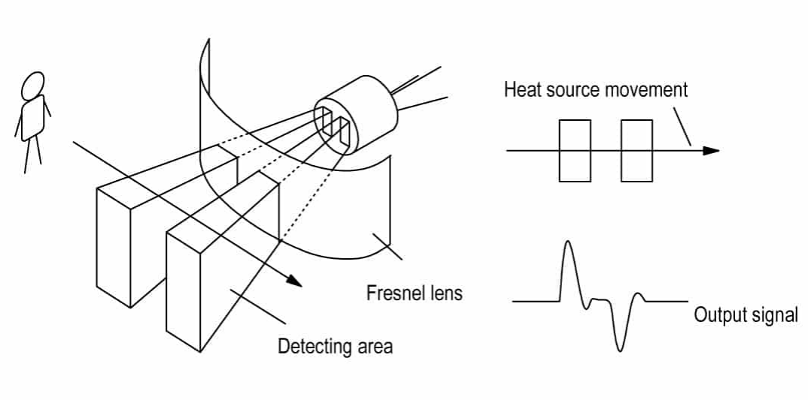

PIR Motion Sensor Module
Passive infrared sensor (PIR sensor) is a common sensor that can measure infrared (IR) light emitted by objects in its field of view. Simply put, it will receive infrared radiation emitted from the body, thereby detecting the movement of people and other animals. More specifically, it tells the main control board that someone has entered your room.
{kind=link}
The PIR sensor detects infrared heat radiation that can be used to detect the presence of organisms that emit infrared heat radiation.
The PIR sensor is split into two slots that are connected to a differential amplifier. Whenever a stationary object is in front of the sensor, the two slots receive the same amount of radiation and the output is zero. Whenever a moving object is in front of the sensor, one of the slots receives more radiation than the other , which makes the output fluctuate high or low. This change in output voltage is a result of detection of motion.
{kind=link}
Note
importance
After the sensing module is wired, there is a one-minute initialization.After initialization,then the module will be in the standby mode. During the initialization,do not let any triggered infrared signal appear in the PIR monitoring range, including your hand. Otherwise in standby mode, it may cause false trigger detection. During the initialization, module will output for 0~3 times at intervals.This is not a real trigger result and you can ignore it until standby mode .

Distance Adjustment
Turning the knob of the distance adjustment potentiometer clockwise, the range of sensing distance increases, and the maximum sensing distance range is about 0-7 meters. If turn it anticlockwise, the range of sensing distance is reduced, and the minimum sensing distance range is about 0-3 meters.
Delay adjustment
Rotate the knob of the delay adjustment potentiometer clockwise, you can also see the sensing delay increasing. The maximum of the sensing delay can reach up to 300s. On the contrary, if rotate it anticlockwise, you can shorten the delay with a minimum of 5s.
Two Trigger Modes
Choosing different modes by using the jumper cap.
H: Repeatable trigger mode, after sensing the human body, the module outputs high level. During the subsequent delay period, if somebody enters the sensing range, the output will keep being the high level.
L: Non-repeatable trigger mode, outputs high level when it senses the human body. After the delay, the output will change from high level into low level automatically.
Example
PIR Motion Sensor Module (Basic Project)